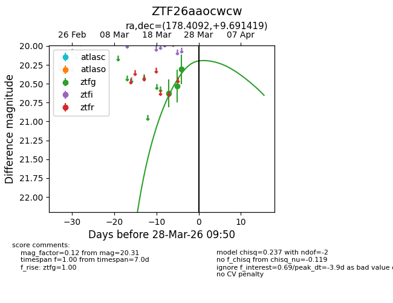
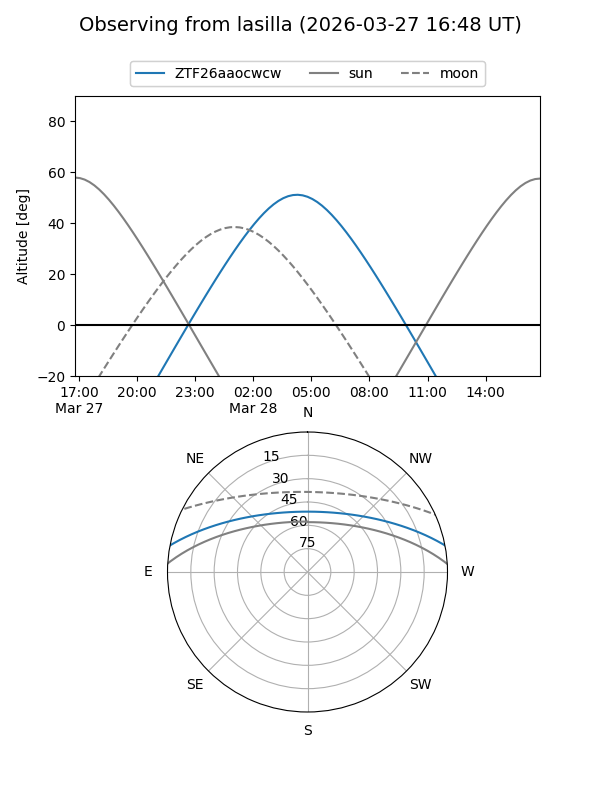
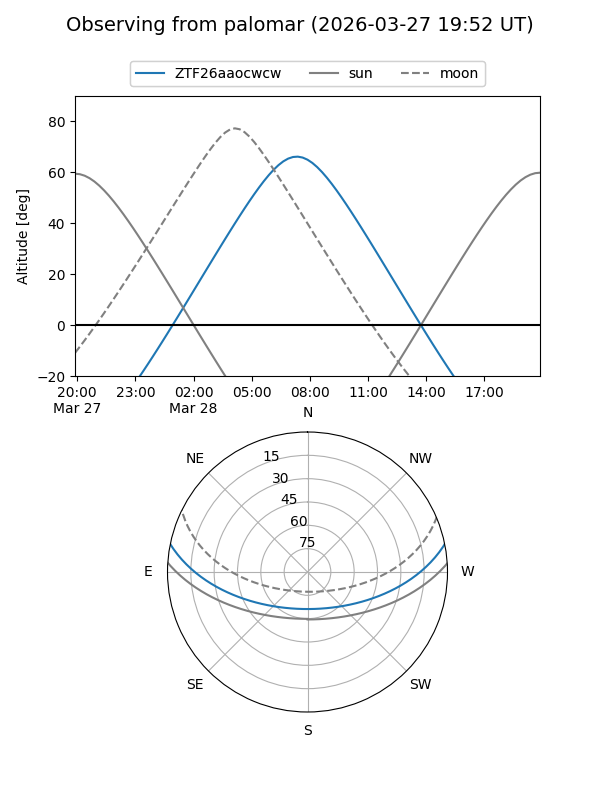
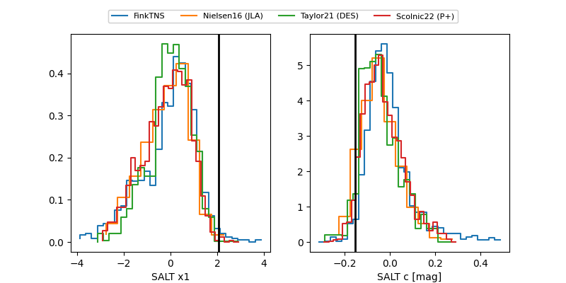

ZTF26aaocwcw
Target ZTF26aaocwcw at 2026-03-28 09:53
Aliases and brokers:
FINK: link
Lasair: link
ALeRCE: link
alt names
ZTF26aaocwcw (ztf,fink_ztf)
Coordinates:
equatorial (ra, dec) = 178.4092,+9.69142
equatorial (HMS+DMS) = 11:53:38.20,+09:41:29.11
galactic (l, b) = (262.1782,+67.86437)
Flags:
Photometry:
last ztfg=20.31
3 ztfg detections
Lightcurve

Visibility


Additional plots
